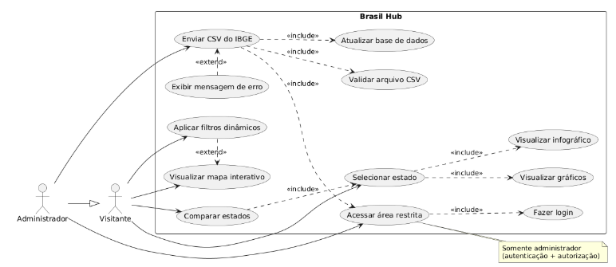
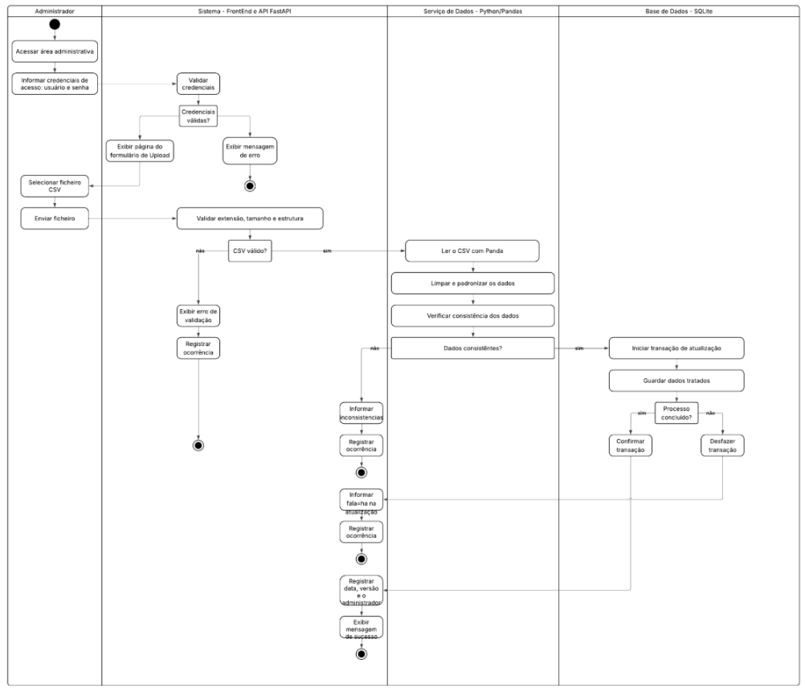
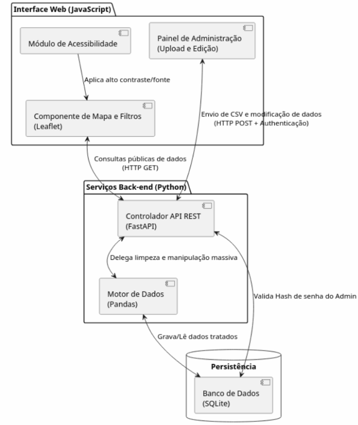
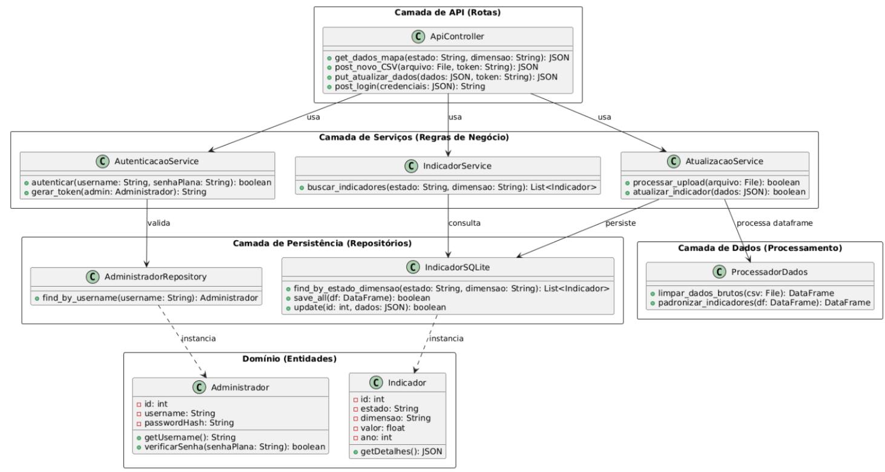

2.5 Visões¶
As diferentes visões arquiteturais apresentam o Brasil Hub sob perspectivas complementares, permitindo compreender o sistema quanto à sua utilização pelos atores, à organização lógica dos módulos, à estrutura interna dos componentes e ao ambiente no qual a aplicação será implantada.
Juntas, essas visões complementam a representação arquitetural apresentada nas seções anteriores e permitem relacionar os requisitos do produto às decisões técnicas adotadas.
2.5.1 Visão de uso¶
A visão de uso apresenta o sistema a partir das funcionalidades disponíveis para os atores que interagem com o Brasil Hub. São definidos dois atores principais: o Visitante e o Administrador.
O Visitante não necessita de autenticação e pode consultar os indicadores socioeconômicos disponibilizados pelo sistema, utilizar o mapa interativo, aplicar os filtros por estado e pelas dimensões do IDH, utilizar os recursos de acessibilidade e, quando implementados, utilizar os recursos complementares de comparação, tabelas, linha do tempo e exportação de dados.
O Administrador representa o usuário autenticado responsável pela manutenção dos dados da plataforma. Além das funcionalidades disponíveis ao Visitante, possui acesso à área administrativa e pode realizar o envio de arquivos CSV do IBGE para atualização da base de dados.
A Figura 2 apresenta o diagrama de casos de uso do sistema, destacando a generalização do Administrador em relação ao Visitante, uma vez que o perfil administrativo também possui as funcionalidades de consulta disponibilizadas ao público.
Figura 2 — Diagrama de Caso de Uso

Fonte: produzido por Felipe George.A funcionalidade selecionada para o diagrama de atividades é o processo de atualização da base de dados pelo Administrador, por apresentar maior quantidade de etapas e dependências entre os componentes arquiteturais.
O processo envolve autenticação, autorização, envio do arquivo, validação do formato, processamento dos dados, persistência das informações e retorno do resultado ao usuário.
Figura 3 — Diagrama de Atividades: Painel do Administrador

Fonte: produzido por Fabiana Reis.
A visão de uso também evidencia decisões que influenciaram a escolha do estilo arquitetural. Os requisitos de tratamento e padronização dos arquivos, desempenho da API, segurança da área administrativa e separação entre interface e processamento justificam a utilização da arquitetura Cliente-Servidor em Camadas.
Dessa maneira, o navegador concentra a apresentação dos dados, enquanto o servidor concentra o processamento, as regras de acesso e a persistência.
2.5.2 Visão de organização lógica¶
O Brasil Hub é organizado logicamente em seis módulos principais, distribuídos entre as camadas da arquitetura. A divisão foi definida para concentrar responsabilidades relacionadas e minimizar dependências desnecessárias entre os componentes.
src/frontend: concentra a apresentação e a interação com o usuário.src/api: representa a fronteira de comunicação entre o navegador e o Back-end.src/services: concentra as regras e a coordenação das operações da aplicação.src/data: concentra a ingestão, validação, transformação e disponibilização dos dados.src/auth: concentra as responsabilidades de autenticação e autorização e atua como módulo transversal de segurança.src/database: encapsula o acesso ao banco de dados.
As dependências seguem uma direção única, reduzindo o acoplamento entre os módulos. O Front-end utiliza a API; a API utiliza os serviços e a autenticação; os serviços utilizam os módulos de dados; os módulos de dados utilizam a persistência; e a autenticação utiliza a persistência para consultar as credenciais administrativas.
Dessa forma, o Front-end não possui conhecimento da estrutura interna do banco de dados, e os módulos de apresentação não implementam regras de persistência diretamente.
Tabela 4 — Tabela de Módulos¶
| Camada | Módulo | Papel resumido |
|---|---|---|
| Interface | src/frontend |
Dashboard, mapas, filtros, acessibilidade e área administrativa |
| API | src/api |
Rotas HTTP e contratos de entrada e saída |
| Lógica de aplicação | src/services |
Coordenação das consultas e da atualização da base |
| Segurança | src/auth |
Autenticação, autorização e proteção das senhas |
| Dados | src/data |
Leitura, validação, tratamento e acesso aos indicadores |
| Persistência | src/database |
Acesso às credenciais administrativas e aos indicadores |
Fonte: produzido por Ágatha Natasha.
2.5.2.1 Razão lógica de cada módulo¶
src/frontend — JavaScript e Leaflet¶
Concentra tudo o que o usuário vê e manipula. Separa as páginas (pages/) dos componentes reutilizáveis de mapa e filtros (components/), dos recursos de acessibilidade de fonte e contraste (accessibility/), do envio de requisições (api_client/) e dos estilos e recursos (assets/).
Assim, a aparência pode mudar sem afetar as regras do sistema, e o acesso à API fica em um único ponto.
src/api — FastAPI¶
É a fronteira do Back-end: recebe as requisições do navegador e devolve as respostas.
Cada rota tem uma responsabilidade: consultas de indicadores (indicators.py), upload de CSV pela administração (admin.py) e login (auth.py).
Os diretórios schemas/ definem os contratos de entrada e saída, de modo que a validação do formato fica na borda do sistema e a lógica interna não depende dela.
src/services¶
Fica entre as rotas e o tratamento de dados. indicators.py coordena as consultas e os filtros por estado e pelas dimensões do IDH/IDHM, enquanto updates.py coordena a atualização da base.
Com isso, as rotas apenas delegam, e as regras de negócio podem ser alteradas ou testadas sem depender do protocolo HTTP.
src/data — Pandas¶
Reúne o ciclo de vida dos indicadores:
ingestion.py: lê o CSV;validation.py: verifica estrutura e valores;processing.py: realiza limpeza e padronização;storage.py: dá acesso aos indicadores já tratados.
Isolar esse ciclo mantém a qualidade dos dados em um só lugar e evita que dados inválidos cheguem ao dashboard.
src/auth¶
Protege a área administrativa.
authentication.py: confirma a identidade de quem faz login;permissions.py: decide se o usuário pode executar determinada ação, como atualizar a base;password_hash.py: garante que as senhas sejam armazenadas protegidas.
Mantê-lo separado concentra as regras de segurança, que podem ser revisadas e evoluídas sem alterar o restante do sistema.
src/database¶
Encapsula o acesso ao banco de dados. connection.py gerencia a conexão e admin_repository.py consulta as credenciais.
Apenas esse módulo conhece os detalhes de persistência; se o banco for trocado no futuro, o impacto deverá ser minimizado pela separação dessa responsabilidade.
2.5.2.2 Comunicação entre os módulos¶
As dependências seguem uma direção única, reduzindo o acoplamento entre os módulos.
- O Front-end utiliza a API.
- A API utiliza os serviços e o módulo de autenticação.
- Os serviços utilizam o módulo de dados.
- O módulo de dados utiliza a persistência.
- O módulo de autenticação utiliza a persistência para consultar as credenciais administrativas.
2.5.2.3 Fluxos principais¶
A organização lógica pode ser compreendida a partir de dois fluxos principais.
Fluxo de consulta¶
No fluxo de consulta, o Visitante interage com a interface web e seleciona os critérios desejados.
O Front-end envia uma requisição HTTP para a API, que valida os parâmetros e encaminha a operação para o serviço responsável.
O serviço consulta os dados tratados por meio da camada de dados e da persistência, retornando à API os registros correspondentes.
A API transforma o resultado em JSON e o envia ao Front-end, que atualiza a visualização do mapa, tabela ou gráfico.
Fluxo resumido:
frontend → api → services → data → database
Fluxo de atualização¶
No fluxo de atualização, o Administrador realiza a autenticação e, após autorização, envia um arquivo CSV pela área administrativa.
A API recebe o arquivo, encaminha-o aos serviços responsáveis e o módulo de dados realiza a leitura, validação, limpeza e padronização utilizando Pandas.
Após a validação, os dados são persistidos no banco e o resultado da operação é retornado ao Administrador.
Fluxo resumido:
- Autenticação:
api → auth → database - Atualização:
api → services → data → database
Essa divisão permite que a lógica de apresentação, as regras da aplicação, o processamento dos dados, a segurança e a persistência permaneçam isolados, facilitando a manutenção e a realização de testes.
Tabela 5 — Comunicação entre os módulos¶
| Origem → Destino | Forma de comunicação | Interface |
|---|---|---|
frontend → api |
Requisições HTTP feitas por api_client/, com dados em JSON |
Rotas HTTP de consulta de indicadores, login e atualização da base |
frontend → api (upload) |
Envio do arquivo CSV por multipart/form-data, pela área administrativa |
Rota de upload em routes/admin.py |
api → services |
Importação de módulos e chamada de funções Python | Funções de indicators.py e updates.py |
api → auth |
Importação de módulos e chamada de funções Python | Funções de autenticação e autorização |
services → data |
Importação de módulos e chamada de funções Python | Funções de ingestão, validação, tratamento e acesso aos indicadores |
auth → database |
Importação de módulos e chamada de funções Python | Funções de admin_repository.py para consultar credenciais |
data → database |
Importação de módulos e chamadas de funções Python | Funções de persistência dos indicadores e conexão com o banco |
Fonte: produzido por Ágatha Natasha.
Em resumo, a comunicação entre o navegador e o servidor usa HTTP com JSON, e o CSV do upload segue por multipart/form-data. Dentro do Back-end, os módulos Python se comunicam por importações e chamadas de função, sem protocolo de rede.
Diagrama de pacotes¶
Figura 4 — Diagrama de Pacotes

Fonte: produzido por Ágatha Natasha.
2.5.3 Visão estrutural¶
A visão estrutural apresenta os principais elementos internos do Brasil Hub e as relações entre eles, complementando a visão lógica apresentada anteriormente.
Enquanto a visão lógica organiza os módulos por responsabilidade, a visão estrutural apresenta os componentes que participam diretamente da execução do sistema e as relações existentes entre eles.
Na camada de apresentação estão os componentes responsáveis pela interface web, incluindo o mapa interativo, os filtros, os recursos de acessibilidade e o painel administrativo. Esses componentes utilizam a API como única interface de comunicação com o Back-end.
Na camada de aplicação, o controlador da API recebe as requisições, valida os parâmetros e encaminha as operações para os serviços responsáveis. O processador de dados utiliza Pandas para executar as etapas de leitura, validação, limpeza e padronização dos dados. O módulo de autenticação valida as credenciais e verifica as permissões necessárias para as operações administrativas.
Na camada de persistência, o banco de dados é acessado por meio dos repositórios responsáveis pelas operações de persistência das entidades correspondentes.
O repositório de indicadores trata da persistência dos indicadores socioeconômicos, enquanto o repositório de administradores realiza as operações relacionadas às credenciais administrativas.
Essa separação impede que os componentes de apresentação ou os atores externos acessem diretamente o banco de dados e reduz o acoplamento entre a aplicação e a tecnologia de persistência.
O diagrama de componentes apresenta as dependências entre os principais componentes de execução. O diagrama de classes apresenta as entidades e serviços necessários para representar as responsabilidades estruturais do sistema, devendo manter a separação entre atores externos, componentes de aplicação e entidades persistentes.
Diagrama de componentes¶
Figura 5 — Diagrama de Componentes

Fonte: elaborado por César Augusto.
Diagrama de classes¶
Figura 6 — Diagrama de Classes

Fonte: elaborado por César Augusto.